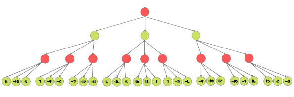
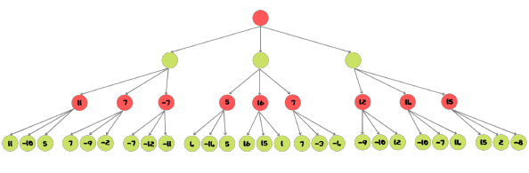
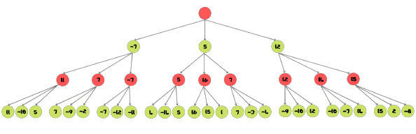
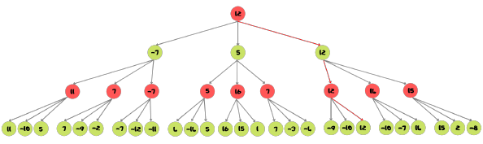

Développement du jeu et son IA
Développement de l'IA
Pour la conception de notre IA, nous avons décidé de nous concentrer sur l’algorithme Min-Max, conseillé par notre professeur référant. Nous avons donc créé un fichier ia1.py contenant 3 fonctions :
La première est la fonction « ia », qui s’occupe de renvoyer la case qu’il considère comme étant la meilleure, en appelant la fonction « max_awale » avec comme paramètres le plateau de jeu, le joueur, et la profondeur de recherche du meilleur coup.
Ensuite, nous avons max_awale. Sa fonction est de trouver, de façon récursive, les meilleurs coups possibles que peut faire l’IA pour maximiser ses gains et gagner la partie. Pour que cette récursivité fonctionne, elle appelle la dernière fonction du programme, min_awale, qui trouve les meilleurs coups de l’adversaire. Ces deux fonctions s’appellent récursivement en réduisant la profondeur de recherche jusqu’à ce qu’elle atteigne 0 ou qu’une solution soit trouvée.
Contrairement au développement du jeu, l’intelligence artificielle nous a donné du fil à retordre...
IA
Adversaire
Nous descendons à la profondeur choisie, ce qui donne les gains pour chaque suite de coups possibles.
Ensuite, nous remontons l’arbre de façon récursive en choisissant la valeur max pour l’IA ou min pour l’adversaire.
 Cela nous donne le chemin le plus rentable pour l’IA (ici en rouge).
